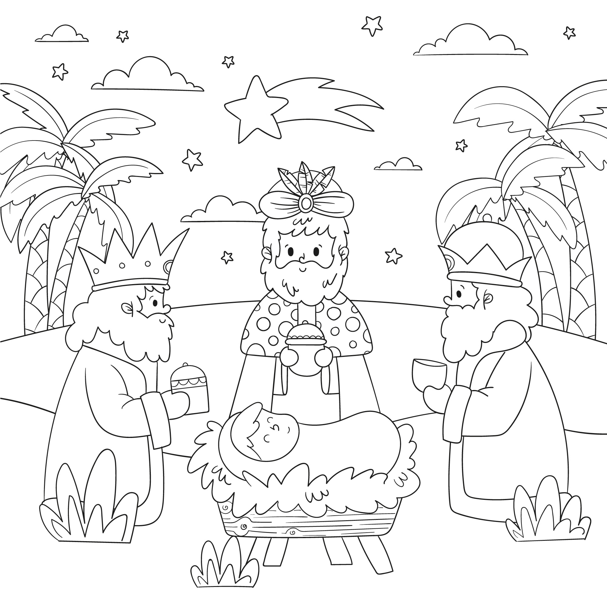

📚 Histórias Bíblicas
🌿 Histórias do Antigo Testamento


✝️ Histórias do Novo Testamento


🎮 Jogo Bíblico
Qual personagem construiu uma arca?
🎨 Vamos Colorir!

Baixar
🔍 Sabia Que...?
O menor versículo da Bíblia é "Jesus chorou." (João 11:35)
O livro de Salmos é o maior da Bíblia, com 150 capítulos!
📺 Vídeo da Semana
🙏 Oração do Dia
Carregando oração...